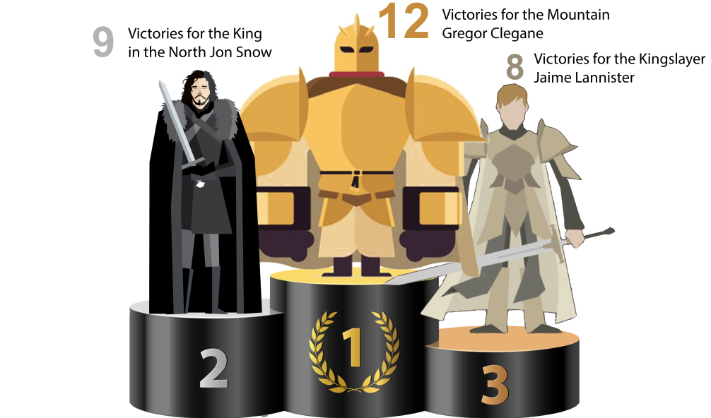
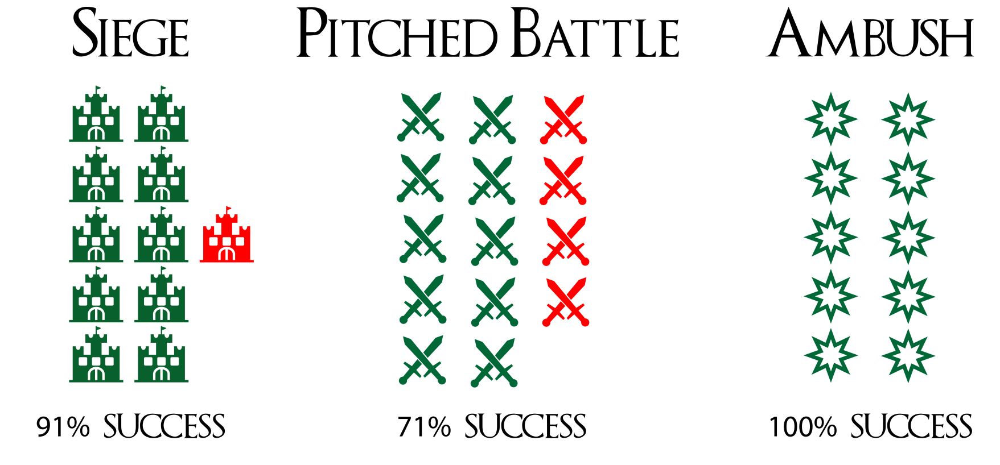

Disclaimer
This article is the result of an in-depth analysis of the successful TV show Game of thrones. We used unofficial data from HBO collected by an IMDB user who manually retrieved it. We have done our best to be independent of all intuitions or emotions in the interpretation of the data in order to present the most relevant vision of the future of the TV show. Our goal is to use statistic tools to guess the character who will win the game of thrones.
The Best Commander
We hold our analysis on the battles that happened on the TV show + on an exhaustive dataset of each battles that happened during the War of Five Kings that are listed in the books (39 battles). Our goal was to determined the best commander in leading an army to the road of success. Three criterias have been taken into account:
- Each commander must have fought more than 5 battles in order to be a proven warrior
- Each commander must have a succes rate above 80%
- Each commander must be alive at the end of season 7

The Race of Clans
This horse race depicts each clans’ war power; the closest the horse is from the finish line, the more victories its clan has managed. Rules of the game : Each battle’s victory makes you advance forward by 1 step, each battle’s loss makes you go backward of 2 step. Thus, we can conclude to a realistic balance of power between the clans still present.
If the Lannisters won 25 battles, the Starks won 20 battles but lost 8 and then finish behind the Greyjoy which have 100% of their battles won with Euron leading.

Battle Strategies
This visualization is a study of the different types of battle strategies used during the War of the fives Kings in Game of Thrones. Despite the lower success rate of the Pitched Battle strategy, it is however this one that is the most often used by the Lannister with 100% of success on this strategy for them showing the power of their army and the quality of the commandment.
We notice that the Lannisters are always beaten when they are attacked with the Ambush strategy. We therefore advise John Snow and the Targaryen to use this strategy against the Lannister.

Screening time of the remaining characters
This visualization is an analysis of the screening time of the main characters throughout the 7 seasons. This study was intended to rank the main characters in this series thanks to the total number of minutes on the air but also to see their evolution season after season following the highlights of the story. Three characters seem to stand out: Jon Snow, Tyrion Lannister and Daenerys Targaryen.
Deaths Prediciton
Does the main characters’ death come at random or does it come to only those selected ones who exhibit similar features?
We used the results given by a machine learning algorithm that was parametered to find features that are common to already dead characters. Once trained on those features it should predict the percentage likelihood of death for yet alive characters. Our goal was to answer the question: Who is likely to die next?
The following 24 features were selected as most contributing (sorted from most to least contributing):
The Deads
Game of thrones’ cemetery is almost full of main characters as the twelve most relevant just below. Euron Greyjoy, Gendry and Davos Seaworth complete the list of the deaths predictions. You can find more details about the machine learning algorithm and the maths behind it here.

Survivors
Only 5 main characters will manage to escape death according to the algorithm: those 4 below and Qyburn.

Conclusion
If we trust the battle analysis, Lannisters has been taking the lead on the battle ground. As a matter of fact, Lannisters won more battle than anyone else and could counts on two of the best commander as with The Mountain and Jaime Lannister. Those elements have been proven right by leading Cersei to the Iron throne at the end of Season 6.
However, Jaime Lannister has been seen leaving Cersei for good at the end of Season 7 while Jon Snow is still the second best commander in the TV show.
By looking at the increasing screening time of the freshly borned alliance Stark-Targaryen, it can be said that Jon Snow has become the strongest candidate.
If we cross the past data with the machine learning algorithm, we can easily conclude - that as one of the survivors - JON SNOW is the truthful winner of the Game of Thrones.
The Next episode will be released in:
We'll see what happens then!